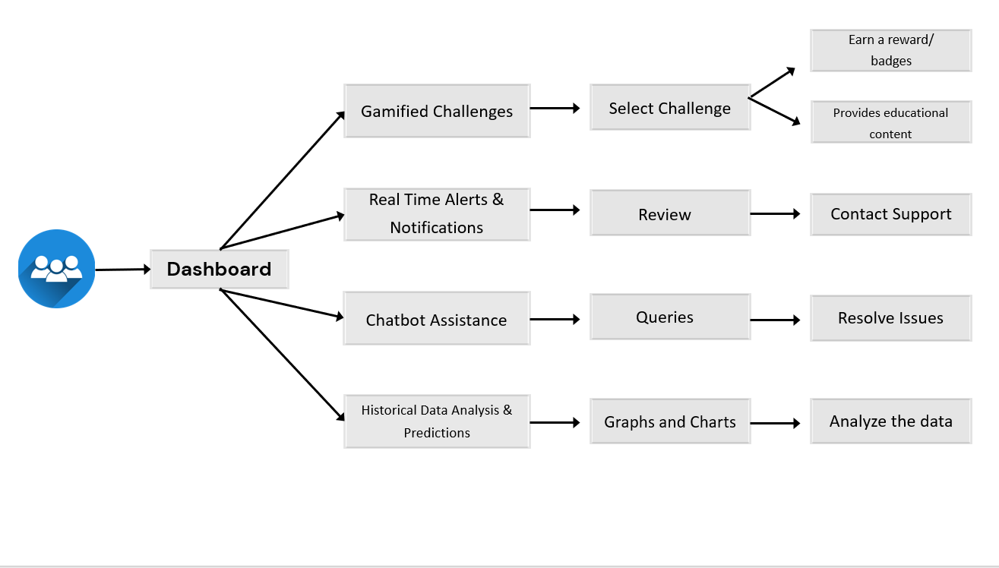

CyberVigil

How CyberVigil Works
- Advanced Real-Time Fraud Detection: Continuous monitoring and analysis of user behavior to detect and respond to threats instantly.
- Proactive Prevention Measures: Predictive analytics and machine learning algorithms to anticipate and prevent potential cyber threats.
- User Education and Engagement: Gamified challenges that educate users about cybersecurity threats and best practices.
- Transparent Reporting and Support: Detailed reports and 24/7 support via a built-in chatbot for user confidence and assistance.
- Robust Authentication and Security: Strong authentication mechanisms to ensure only authorized access to sensitive data and systems.